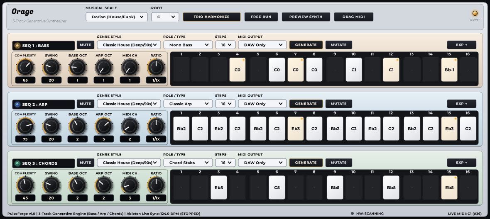

PulseForge unisce la precisione matematica dei sequencer eurorack con la nobiltà dell'alluminio spazzolato satinato. Tre motori generativi simultanei (Bass, Arp, Chords) armonizzati in scala con controlli tattili vintage e prestazioni 2026.

Ogni corsia ha una personalità acustica e una gradazione metallica dedicata per una navigazione immediata.
Specializzato in linee di basso solide: Acid 303, Sub House, Bassline sincopate e groove melodici. Include pitch-slide autentico, accenti e gestione dell'ottava di base.
Motore per arpeggi poliritmici, sequenze ipnotiche alla Bonobo e ratchet ad alta velocità (1x..4x). Sincronizzato con divisori di tempo indipendenti da 1/4 a 1/32.
Generatore di stabs e progressioni armoniche. Crea accordi modali (Min7, Maj9, Sus4, Dim) sempre consonanti e perfettamente sincronizzati con Bass e Arp tramite Trio Harmonize.
Zero compromessi: DSP a 64-bit, LookAndFeel ultra-ottimizzato e connettività totale.
Un solo clic rigenera tutte e tre le tracce simultaneamente applicando regole contrappuntistiche: il basso fonda l'armonia, gli accordi definiscono il colore e l'arpeggio ricama le note guida.
Manopole Davies 1900 in bachelite scura con scala graduata 0-10 e display digitale OLED ad incasso per un feedback visivo istantaneo dei valori.
Sincronizzazione istantanea al clock DAW (Ableton Live, FL Studio, Logic) o modalità Free Run per jam indipendenti sul sintetizzatore interno a latenza zero.
Trascina con un gesto le 3 clip MIDI generate direttamente sulle tracce del tuo arrangiamento, con automazioni di velocity, slide e note length intatte.
Instrada ciascuna sequenza su porte MIDI hardware esterne separate (sintetizzatori analogici, drum machine) con filtraggio canali dedicato per traccia.
Tutti i gradienti in alluminio satinato e le ombre tridimensionali sono pre-renderizzati in cache ARGB a 60 FPS senza pesare sulla CPU audio.
Il pacchetto di rilascio include lo script automatico che copia il VST3 nella cartella standard di Windows e resetta la cache di scansione della DAW.
install_vst3.bat.PulseForge.vst3 in C:\Program Files\Common Files\VST3\DaMA\ e resetterà la cache di scansione di Ableton Live.